This topic will walk you through the creation of a basic plan.
When you are finished, you will have a bare-bones plan that is available in the store for purchase. The goal of this topic is to get you familiar with the basic development process and the various parts of Service Design Center.
What we will create is a plan that allows voice calling. The plan will have no restrictions on where voice calls can be made and will allow 100 minutes of voice calling for 1 month.
Before you dig in and start making stuff, you want to know what your goal is. Mapping out the details of what you want to have at the end is the first stage of the process.
In this scenario, you want to create a basic voice plan. But even the most basic of plans requires plenty of details to get it right. Among the questions you want to answer:
To keep things simple, we'll make some assumptions:
There are 3 basic steps:
eCommerce policies are what allow plans to use the cellular network. So before you can create a plan, you have to create the eCommerce policy that your plan will be based upon.
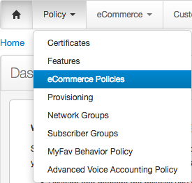
There are two types of eCommerce policies: service polices and entitlement policies, and there are three types of each: voice, messaging, and data. For a voice plan that you want to put in the catalog for customers to buy, you want to create a voice service policy.
This takes you to the Add Voice Service Policy dialog box.
This is where your planning begins to pay off. When you create a plan, you attach a service policy to it. The name you use here is the name you will have to find when you create the plan. For this scenario, we'll call the policy "Simple Voice."
A new eCommerce policy is like a blank canvas. Like when you create a new document in a word processing program, you start with nothing and you fill in the content. The content, in this case, is an eCommerce service policy.
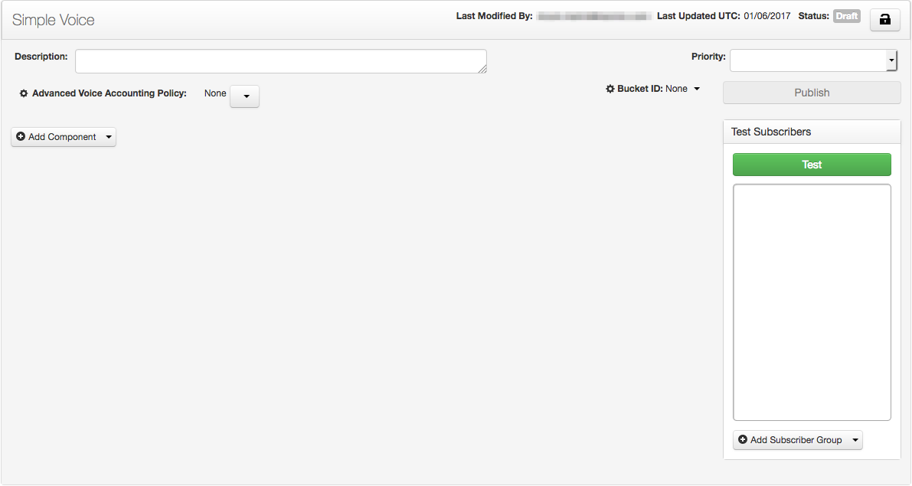
Policies do all the work, and service policies do all the work to define what service can be used, when, and how. This is a voice service policy, so we know that it controls voice service. But how?
Policies contain components. Components contain policy events, and those are connected to filters. The filter-policy event combination in a policy component is what does most of the work in a policy. So we want to add a component.
As with most things, we have to give the component a name.
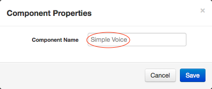
Keeping things consistent, we'll give it the name "Simple Voice."
Now that we have a component, the first thing to do is to add a filter to the component. Filters contain criteria, and normally, you'd have to decide what voice filter criteria to add. As it turns out, we don't want to add any. Criteria in filters restrict when the policy event gets evaluated, and there are no restrictions we want in this voice policy. No filtering means that calling will be allowed to anywhere.
However, a component requires a filter.
And like with most new things we add, the filter needs a name. We'll stay consistent with our naming: "Simple Voice."
Next, we add a policy event to the component.
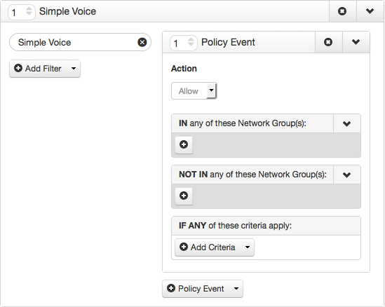
And we're done with the component. Here's why.
There are two more steps necessary to make the eCommerce policy complete, adding voice accounting and adding network enforcement.
Voice accounting defines how voice calling is charged. A voice accounting policy includes settings for voice call grace period, accounting increment, and minimum charge duration for any plan that uses the policy. All the increments are measured in seconds, and common values are 15 seconds for the grace period, 5 seconds for the accounting increment, and 30 seconds for the minimum charge duration.
You just have to add a voice accounting policy to the eCommerce voice service policy. You can do this in two ways, by creating a new voice accounting policy or by linking the voice service policy to an existing voice accounting policy.
In addition, voice accounting policies can be linked at the voice service policy level or to a component in the voice service policy. For simplicity, you will link an existing voice accounting policy to the voice service policy.
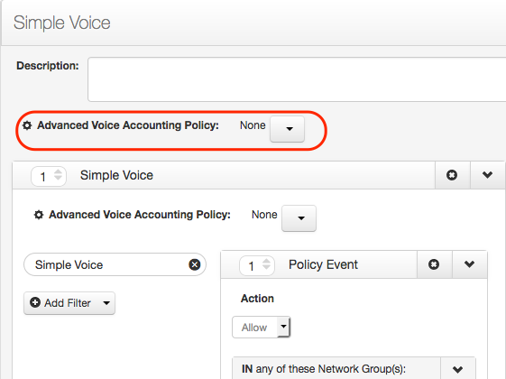
Network enforcement allows policy enforcement for devices that do not have the embedded ItsOn client software, and for voice service polices is in the form of bucket IDs. The bucket ID that you add to a policy should be configured to match the policy configuration in the policy component(s).
Now we're done creating the eCommerce policy that will be used to power the plan. However, it cannot be attached to a plan until it is tested and published.
The first step to create a plan is to go into the eCommerce section of Service Design Center.
From there, you go to the Products list.
Before you go further, you'll want to understand the concept of sandboxes. A sandbox is a view of the catalog that combines everything that is deployed plus all the changes you make in that sandbox. When you're working in the eCommerce section of Service Design Center, you're always working within the context of a sandbox. For now, we'll just work in your default sandbox, so you don't need to change anything here.
Even for simple plans, there are a number of fields that you have to fill out. The various fields are all detailed in Plan Settings. Before we explain the necessary ones for this simple plan, let's first attach the voice service policy we just created. To do that, look in the Service section. One of the settings is Service Policy.
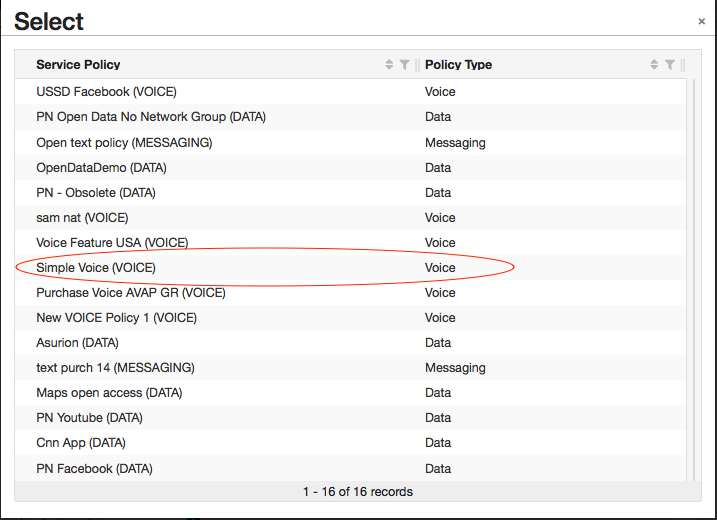
| Section Name | Setting Name | Value | Notes |
|---|---|---|---|
| Appearance | Name | Simple Voice | |
| Recipient/Sharing/Assigning | Customer can buy for? | Customer's account only | The plan can be used only by the subscribers in the customer's account and cannot be gifted. |
| Allocation | Exclusive | The plan can be used only by the purchaser. It cannot be assigned to another subscriber in the account nor shared among subscribers in the account. Selecting Exclusive means that nothing is available to be selected for Share Method, Share Type, or Assignment Method. | |
| Service | Service Policy | Simple Voice | |
| Voice Usage | Limited To 100 Minutes | ||
| Per Call Limit | None | ||
| Behavior | Recurring | No | This means that nothing is available to be selected for Number of Cycles, Aligned to account cycle, or Prorated on first cycle. |
| Cycle Duration | Lasts 1 Month | ||
| Usage Display | Default | ||
| Display detailed usage data | Yes | ||
| Terminates when usage allowance runs out | Yes | ||
| Visibility | Show | ||
| Billing | Retail Price | 1.00 | |
| Tax Classification | Not Applicable |
You have your first plan. But it's not available for purchase yet. In the eCommerce section, all changes have to be promoted, approved, and deployed. Adding a new plan is considered a change.
All the changes you make are listed on the My Changes page.
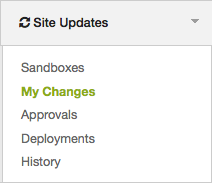
In this case, there is one change: The plan you added.
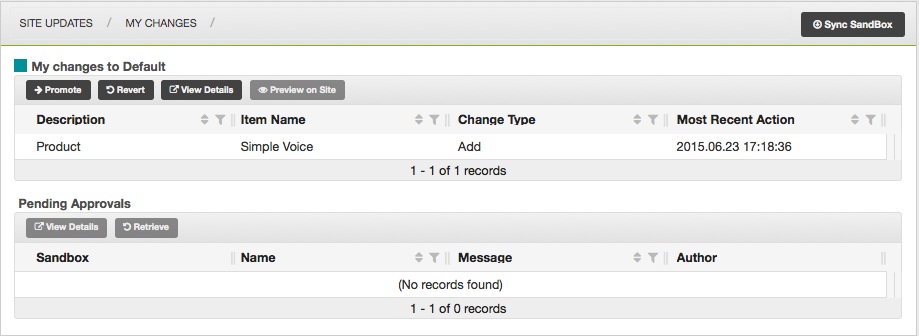
The first step is to promote your change.
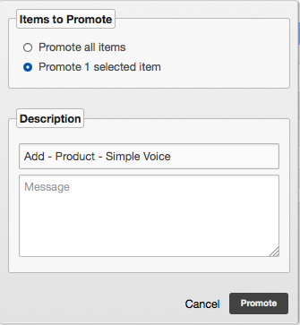
The Description section helps you track your changes through the promote-approve-deploy process. It is given a default title that includes the change action, in this case an add, what is being changed, in this case a product, and the name of the item being changed.
Changes that have been promoted but have not yet been approved move to the Pending Approvals table on the My Changes page.
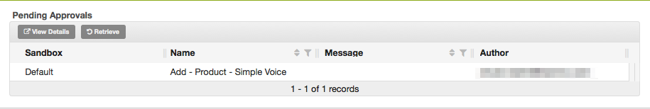
Approvals are similar to promotions, except on the Approvals page.
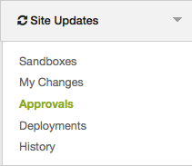
The Items pending action list shows the plan you just promoted.
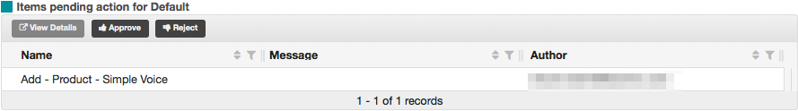
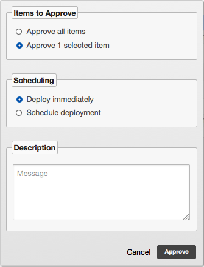
That's all you need to do to create a plan. The next step is to make it available to customers in the store.
The store experience for your customers is defined by the use of categories. Categories (and sub-categories) are used to organize all the products you sell. One category is used as the "root" of the normal store browsing experience. Sub-categories of that category define the sections of your store. See more about this in Categories for Displaying Plans in the Store.
For this part of the exercise, we're going to assume that your store categories already exist, that you have a /special root category and a /special/voice-plans sub-category of the root category (also known as a parent category).
The first step to add a plan to a store category is to go into the eCommerce section of Service Design Center.
From there, you go to the Categories list.
You should see something similar to this.
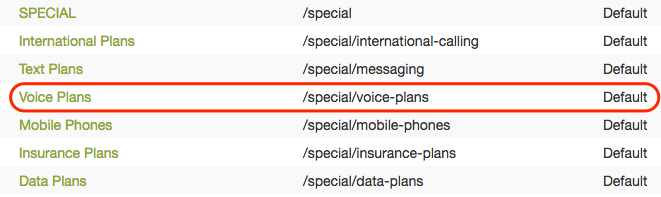
This is an example of a store experience with 6 sub-categories. Yours may look different, but the important part is that you are looking for a category for voice plans that is a sub-category of the SPECIAL category.
The plans in a category are listed in the Products tab.
The Products tab not only lists the products that are displayed in that section of the store, the Display Order value determines the order in which those products are displayed. For now, we don't really care about where this plan will be displayed, so just scroll through the list and note the largest number.
A dialog box appears that lists all of the published plans. The plan you just created should be at the bottom of the list. Scroll down in the dialog box until you find it.
You should see the voice plan in the All Products list. Note that it is in yellow text with a pencil icon next to it. That's because you've just made a change, a change in the category.
In the Create a Plan section, you promoted, approved, and deployed the plan. You take the exact same steps again, this time for the change you made to the category.
You're done! Your new Simple Voice plan is now available in the store for your customers to buy.